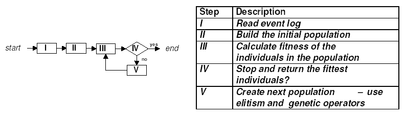
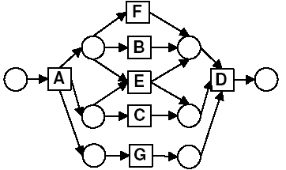
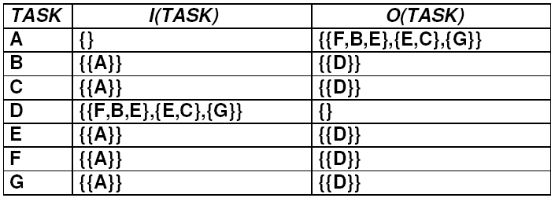

| Note: This page explains the main configuration parameters of the Genetic Algorithm plug-in. For more detailed information, please have a look at the papers available at http://www.processmining.org. |
Genetic Algorithm Plug-in
Author: Ana Karla Alves de Medeiros (http://is.tm.tue.nl/staff/amedeiros/)
The "Genetic Algorithm plug-in" uses genetic algorithms to mine process models from event logs. Its output is a set of process models that are decreasingly ordered by the fitness value. In other words, the best mined model is listed first, and so on. Genetic algorithms are adaptive search methods that try to mimic the process of evolution. These algorithms start with an initial population of individuals. Every individual is assigned a fitness measure to indicate its quality. In our case, an individual is a possible process model and the fitness is a function that evaluates how well the individual is able to reproduce the behavior in the log. Populations evolve by selecting the fittest individuals and generating new individuals using genetic operators such as crossover (combining parts of two or more individuals) and mutation (random modification of an individual).
The figure below illustrates the "Genetic Algorithm plug-in" main steps:
|  |
Every individual in the population is represented as a causal matrix. Figure 3 illustrates the causal matrix for the process model in Figure 2. The causal matrix shows the dependencies between the tasks, as well as the semantics of these dependencies. In short, every tasks has an input (I) and output (O) set of dependencies. Tasks in a same subset of an input/output set have an XOR-relation. Tasks in different input/output subsets of a task have an AND-relation.
|  |
|  |
The "Genetic Algorithm plug-in" parameters are:
Population size
Sets the number of individuals that are going to be used during the search.
Initial population type
Sets how the initial population should be built. The table below summarizes
the possible options.
| Heuristics are Used to Set the Dependencies Between Tasks |
The Dependencies Between Tasks are Randomly Set |
|
| Duplicate Individuals are Allowed |
Possible Duplicates | Without Heuristics |
| Duplicate Individual are Forbidden |
No Duplicates |
Maximum number of generations
Sets the maximum number n of times that the genetic algorithm can iterate. This parameter
relates to the stopping criteria. In short, the Genetic Algorithm Plug-in stops when (i)
it finds an individual whose fitness is maximal, (ii) it iterates n times, or
(iii) the fittest individual has not changed for n/2 iterations in a row.
Seed
Sets the seed that is used to generate random number for this plug-in.
Power Value
Sets the power value that is used by the heuristics to build the initial population.
In a nutshell, the heuristics works as follows: the more often a task t1 is directly followed by a
task t2 (i.e. the subtrace "t1t2" appears in traces in the log), the higher the probability
that individuals are built with a dependency (or arc) from t1 to t2.
The power value is used to control the "influence" of the heuristics in the probability of setting a
dependency between two tasks. Higher values for power value lead to the inferring of fewer
dependencies between two tasks in the event log, and vice-versa.
Elistism rate
Sets the percentage of the fittest individuals in the current generation that are going to be copied to the next generation.
For instance, an elitism rate of 0.02 means that 2% of the best individuals in
the population are copied to the next population.
Fitness Type
Sets the type of the fitness that the Genetic Algorithm plug-in uses to assess the quality of an individual.
The quality of an individual is basically set by its replaying of the log traces.
This replay can use a stop semantics parsing or a continuous semantics one. The
stop semantics parsing stops whenever the task to be parsed is not enabled. The
continuous semantics parsing works in a different way: whenever a task is not
enabled, the problem is registered (for instance, the number of missing tokens),
and the task is fired anyway. The fitness types Proper Completion and Stop
Semantics use stop semantics parsing. The other fitness types use a
continuous semantics one. In short, the fitness types work as follows:
|
NOTE: We strongly recommend the use of the "ExtraBehaviorPunishment" fitness type because it incorporates the concepts of the other fitness types.
Show Advanced Fitness Parameters
Allows for the setting of the parameters for the selected fitness type. For the GA, the fitness "ExtraBehaviorPunishment"
is the only one to have a parameter. This parameter is the Extra Behavior
Punishment (the kappa in item 5 of Figure 4).
Use Genetic Operators
Sets if the genetic operators crossover and mutation are going to be used to build the
populations that follow the initial population. If this option is unchecked, the next populations are built just like the initial population. If this option is checked,
then the individuals of the next population that do not belong to the elite are
created by applying crossover and mutation to individuals in the current
population. The cycle works are follows: first two parents are selected;second they undergo
crossover (with a certain probability) and produce two offsprings; third, every offspring may be
mutated with a certain probability; finally, the offsprings are inserted into the new population.
Selection Method Type
Sets how the parents for genetic operators are going to be chosen. Both methods are based on a tournament. The
method type Tournament works by randomly selecting two individuals in the population and returning the fittest individual in 75% of the times,
and the less fit individual in 25% of the times. The method type Tournament5 randomly selects five individuals in the population and always returns
the fittest individual.
Crossover Type
Sets how two parents (selected individuals) are going to be recombined. All types work at the task level.
However, their granularity varies. A task has an input and output set.
So, some crossover types work on the full input/output sets, others on subsets
that are in the input/output sets of a task. In short, the crossover types work as follows:
NOTE: We strongly recommend the use of the "Enhanced" crossover type because it incorporates the concepts of the other crossover types.
Crossover Rate
Sets the probability that two parents are
going to be recombined to create two offsprings for the next generation. If the
probability is equal to 0, then, after the crossover, the offsprings are just
like the parents.
Mutation Type
Sets how an individual is going to be randomly modified. The mutation point is
a task.
NOTE: We strongly recommend the use of the "Enhanced" mutation type because it incorporates the concepts of the other mutation types.
Mutation Rate
Sets the probability that an individual is going to be mutated.